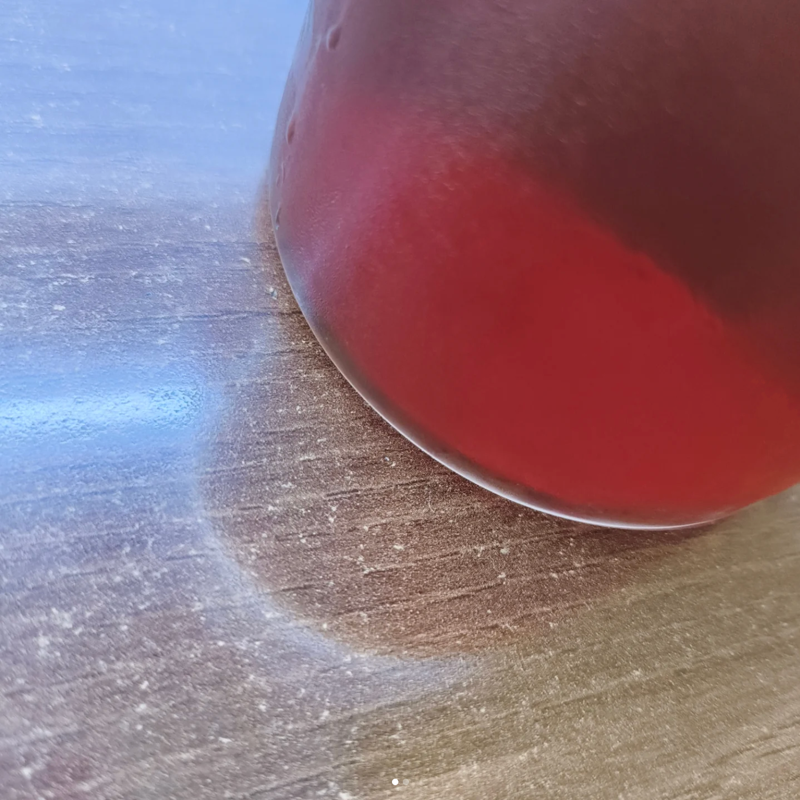

South Indian Coffee

Description
The South Indian Filter is a popular coffee brewing method in, well, South India.
It involves elements of both percolation and immersion. Coffee drips through an upper chamber into a lower one, giving a coffee concentrate. Ratio is 20 grams of coffee to 80 or so ml of water.
Ingredients
- Coffee grounds - Medium-fine to medium (Freshly ground, of course!)
- Water
- South Indian Filter
Steps
- Add grounds to the filter
- Tamp as required.
- Add water at 95 degrees celsius.
- Close the filter
- Wait 30 to 60 minutes
- The lower chamber will now have coffee concentrate.
- Mix water and concentrate in a 4:1 ratio. You can also use hot milk instead of hot water.
- Enjoy.